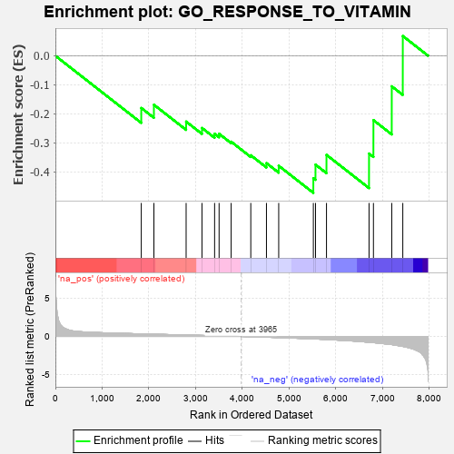
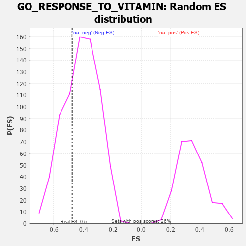

| | | Dataset | 7d |
| Phenotype | NoPhenotypeAvailable |
| Upregulated in class | na_neg |
| GeneSet | GO_RESPONSE_TO_VITAMIN |
| Enrichment Score (ES) | -0.4715507 |
| Normalized Enrichment Score (NES) | -1.1518017 |
| Nominal p-value | 0.30257803 |
| FDR q-value | 0.69641876 |
| FWER p-Value | 1.0 |
Table: GSEA Results Summary

Fig 1: Enrichment plot: GO_RESPONSE_TO_VITAMIN
Profile of the Running ES Score & Positions of GeneSet Members on the Rank Ordered List
| PROBE | GENE SYMBOL | GENE_TITLE | RANK IN GENE LIST | RANK METRIC SCORE | RUNNING ES | CORE ENRICHMENT | | 1 | GATA4 | | | 1837 | 0.330 | -0.1796 | No |
| 2 | BMP7 | | | 2107 | 0.290 | -0.1684 | No |
| 3 | AQP3 | | | 2796 | 0.184 | -0.2264 | No |
| 4 | OGG1 | | | 3135 | 0.132 | -0.2484 | No |
| 5 | MED1 | | | 3405 | 0.089 | -0.2684 | No |
| 6 | FES | | | 3501 | 0.077 | -0.2684 | No |
| 7 | SRSF2 | | | 3759 | 0.033 | -0.2956 | No |
| 8 | PDX1 | | | 4179 | -0.038 | -0.3423 | No |
| 9 | SNW1 | | | 4514 | -0.096 | -0.3693 | No |
| 10 | PIM1 | | | 4776 | -0.152 | -0.3785 | No |
| 11 | VDR | | | 5517 | -0.325 | -0.4211 | Yes |
| 12 | FOLR2 | | | 5563 | -0.336 | -0.3745 | Yes |
| 13 | ADA | | | 5798 | -0.405 | -0.3410 | Yes |
| 14 | EGFR | | | 6708 | -0.765 | -0.3364 | Yes |
| 15 | KYNU | | | 6802 | -0.816 | -0.2215 | Yes |
| 16 | TSPO | | | 7194 | -1.065 | -0.1052 | Yes |
| 17 | OTC | | | 7430 | -1.305 | 0.0680 | Yes |
Table: GSEA details [plain text format]

Fig 2: GO_RESPONSE_TO_VITAMIN: Random ES distribution
Gene set null distribution of ES for GO_RESPONSE_TO_VITAMIN